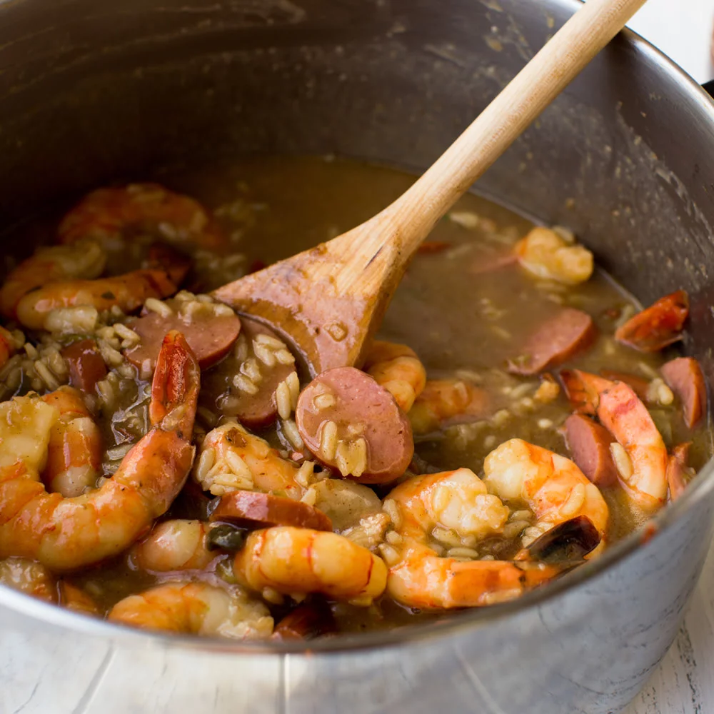

Zatarain's Gumbo

A soup styled dish consisting of rice, sliced sausage, whole shrimp, and various spices from Zatarain's packaged box mix.
Ingredients
- 1 lb 16/20 count raw peeled deveined tail-on shrimp
- 1 lb beef hot link sausage of your choice
- 1 box Zatarain's gumbo mix with rice
- 6 cups water
- Optional - Red pepper flakes to taste
Directions
- Mix 6 cups water and Gumbo Mix in 4-quart saucepan until well blended.
- Cut hot links into bite size pieces.
- Remove tails from shrimp.
- Stir in shrimp and sausage.
- Bring to boil. Reduce heat to low; cover and simmer 25 minutes or until rice is tender.
- Enjoy!